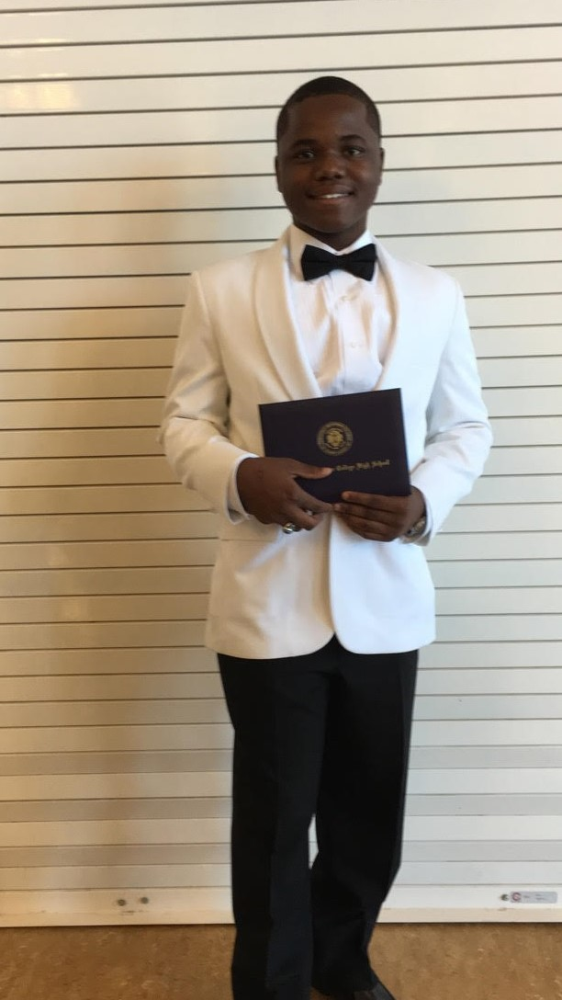

About Me
| Erick Chatman |
| 
Graduation
|
| Birth name |
Erick Patrick Chatman |
| Born |
(1997-22-12) December 22, 1997 (age 19)
|
| Birth Place |
St. Louis, Missouri, U.S. |
| Parents |
Linda & Charles Chatman |
| Height |
5'5 |
| Weight |
180lbs |
| Favorite Color |
Green |
| Favorite Sport |
Baseball |
| Favorite Number |
14 |
Introduction
My name is Erick Chatman. I was born and raised in St. Louis, Missouri. I am the tenth out of fourteen children, all
raised by my mother Linda Chatman and my father, Charles Chatman. I have four brothers, Charles Jr., Lionel, Tyrone,
Torre and nine sisters, Maria, Beverly, Linda, Tasha, Virgie, Charlynn, Faye'lin, and Akilah.
Background
When I was born, I was diagnosed with Sickle Cell Anemia. All I was in and out of the hospital my whole life until May 7, 2010 I recived a bone marrow treatment. Luckily, I have 13 siblings, my brother was a match and I recieved his Bone Marrow. 2 years later my mom was diagnose with Breast Cancer. She started Chemo May 7, 2012. My mom is now breast caner free. Because I had a bone marrow transplant, the healing process was really long. I missed 6 and 7 grade healing from my treatment. Because of my lack of middle school education I had a hard time in High School. I attend UCM. I am a biology pre med major. I dream is to get accepted into Medical School, so I can become a Hematologist, and help kids that are batting with different blood disease just like me.
Education
I started my education at Peabody eMINTs Academy. I attended Peabody from pre-k until the 8th grade. After Peabody I was accepted into Christian Brothers College High School (CBC). I attended CBC and graduated with an 3.3 cumulative GPA. I was then accepted until 12 colleges/universities,but I decided that I wanted to attend the University of Central Missouri (UCM) where I major in Biology Pre-med.